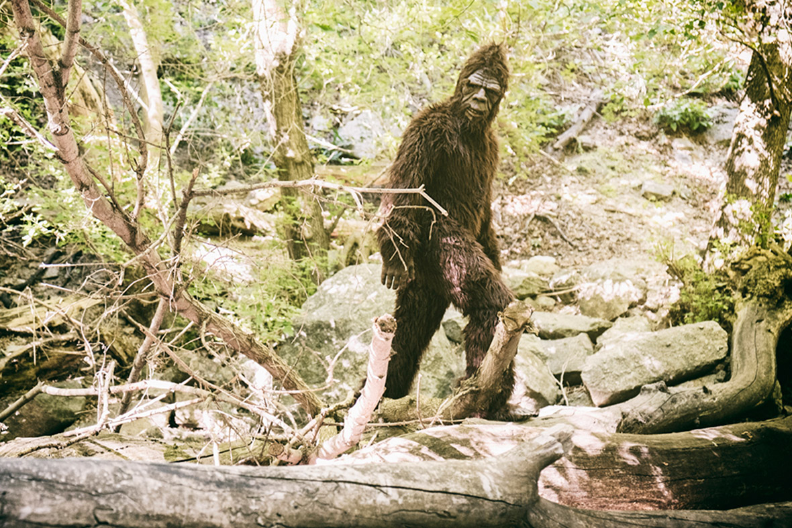

{% extends '_layout.html' %}
{% block title %}Cryptid Catalog | Encyclopedia{% endblock %}
{% block body %}
- BACK
- BIGFOOT
- Type: Terrestrial

- Bigfoot is a large, dark, apelike beast that roams the forests of North America. Bigfoot may be commonly mistaken for a bear at first sight.
- However, his ferociousness and more human-like walk separates him from any typical creature. Bigfoot gets his name from the enormous size of the footprints he leaves in his tracks.
- Sightings of him report him to be seen with beating red or yellow eyes, throwing rocks, bending or breaking trees, and a skunk-like, foul odor. Additionally, Bigfoot has been known to wander the woods completely alone.
- Campers have sighted this creature the most. Due to his nighttime appearances, it is believed that Bigfoot is nocturnal.
{% endblock %}